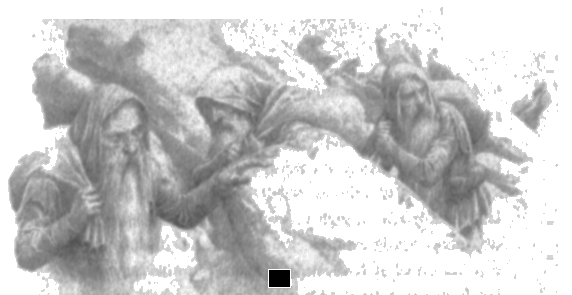

7
Şimdi hikaye, Bodur-cüce Mîm’e dönüyor. Bodur-cüceler uzun süredir akıllardan çıkmıştı, çünkü Mîm onların sonuncusuydu. Eski günlerde bile onlar hakkında pek az şey biliniyordu. Uzun zaman önce Beleriand Elfleri onlara Nibin-nogrim diyordu, ama onları sevmiyorlardı; ve Bodur-cüceler de kendilerinden başka kimseyi sevmezdi. Orklardan nefret ediyor, onlardan korkuyor olsalar da, Eldar’dan da nefret ediyorlardı ve en nefret ettikleri de Sürgünlerdi; çünkü Noldor, diyorlardı, topraklarımızı ve evlerimizi çaldılar. Nargothrond, Finrod Felagund Deniz’in üzerinden gelmeden uzun zaman önce, ilk önce Bodur-cüceler tarafından bulundu ve orayı kazmaya da ilk onlar başladılar.
Bazılarına göre, eski günlerde doğudaki cüce şehirlerinden sürülen cücelerin soyundan geliyorlardı. Morgoth’un gelişinden uzun zaman önce batıya geçmişlerdi. Efendisiz ve sayıca az olduklarından, metal cevherleri keşfetmeyi güç buldular ve demircilik yetenekleri ve silah stokları azaldı; gizli yaşamlar yaşamaya başladılar ve doğudaki soydaşlarından daha ufak tefek oldular, sırtlarını bükerek, hızlı ve sinsi adımlarla yürümeye başladılar. Bununla birlikte, tüm cüce türünde olduğu gibi, boylarının düşündürdüğünden çok daha güçlüydüler ve büyük güçlüklerde hayata tutunabiliyorlardı. Ama sonunda sayıca azalmışlar, Mîm ve iki oğlu dışında Orta Dünya’dan silinmişlerdi; ve Mîm, cüce hesabıyla bile yaşlıydı, yaşlı ve unutulmuş.
Beleg’in gitmesinden sonra (bu, Túrin’in Doriath’tan kaçmasından sonraki ikinci yaz mevsimindeydi) haydutların işleri kötüye gitti. Mevsimsiz yağmurlar yağmıştı ve kuzeyden, Teiglin üzerindeki eski Güney Yolu’ndan daha da büyük sayılarda ork inmiş, Doriath’ın batı sınırlarındaki tüm ormanlarda rahatsızlık yaratmışlardı. Pek az güvenlik ve dinlenme fırsatı vardı ve çete avcıdan çok av olmuştu.
Bir gece, ateşsiz bir karanlıkta gizlenmiş yatarlarken, Túrin hayatını düşündü ve ona çok daha iyisini yapabilirmiş gibi geldi. “Güvenli bir sığınak bulmalıyım,” diye düşündü, “ve kışa ve açlığa karşı önlem almalıyım.” Ama nereye döneceğini bilemiyordu.
Ertesi gün, adamlarını güneye, Teiglin’den hiç uzaklaşmadıkları kadar uzağa, Doriath bataklıklarına götürdü; ve üç günlük yolculuktan sonra, Sirion Vadisi’ndeki korulukların batı kıyısında durdular. Burada, kıraç araziye doğru yükselmeye başlayan toprak daha kuru ve daha çıplaktı.
Bundan kısa süre sonra, yağmurlu bir günün gri ışığı solarken, Túrin ve adamları bir çobanpüskülü çalısına sığınmıştı; ve onun ötesinde ağaçsız, büyük taşların birbirine yaslanmış ya da tek başına yattığı bir yer vardı. Yapraklardan damlayan yağmur dışında her şey sessizdi.
Aniden bir nöbetçi ses verdi ve ayağa fırladıklarında, taşların arasında saklanarak ilerleyen, grilere bürünmüş, başlıklı üç şekil gördüler. Her birinin sırtında birer büyük çuval vardı, ama buna rağmen hızlı ilerliyorlardı. Túrin durmalarını söyledi ve adamlar av köpeği gibi üstlerine çullandılar; ama onlar istiflerini bozmadılar ve Andróg’un onlara ok fırlatmasına rağmen, ikisi alacakaranlıkta gözden kayboldu. Daha ağır ilerleyen, yükü daha ağır olan bir tanesi geride kalmıştı; ve kısa zamanda yakalandı, yere fırlatıldı ve hayvan gibi çabalamasına, ısırmasına rağmen, pek çok el tarafından yere mıhlandı. Ama Túrin yaklaştı ve adamlarını payladı. “Ne yakaladınız?” dedi. “Bu kadar sert davranmanın ne gereği var? Yaşlı ve ufak tefek biri. Ne zararı var ki?”
“Isırıyor,” dedi Andróg, kanayan elini tutarak. “Bu ya ork, ya da ork soyu. Öldür onu!”
“Bizi hayal kırıklığına uğrattığı için hak ediyor bunu,” dedi, çuvalı almış olan bir başkası. “Burada kökler ve küçük taşlardan başka hiçbir şey yok.”
“Hayır,” dedi Túrin, “sakalı var. Bu yalnızca bir cüce, sanırım. Bırakın kalkıp konuşsun.”
Böylece Mîm, Húrin’in Çocuklan’nın Hikayesi’ne girdi. Çünkü Túrin’in ayaklarının dibinde dizlerinin üzerine doğruldu ve canını bağışlamaları için yalvardı. “Yaşlıyım,” dedi, “ve fakirim. Orkların yaptığı gibi, beni sebepsiz yere öldürmelerine izin verme, efendim.”
Bunun üzerine, Túrin içten içe ona acıdı, ama şöyle dedi: “Fakir görünüyorsun, Mîm, ama bir cüce için tuhaf bir durum olurdu; ama bence biz daha fakiriz: evsiz ve dostsuz insanlarız. Büyük yokluk içinde olduğumuz için, seni sırf merhametimizden bağışlamayacağımızı söylesek, fidye olarak ne önerirsin?”
“Ne arzuladığını bilmiyorum, beyim,” dedi Mîm ihtiyatla.
“Bu zamanda, pek az!” dedi Túrin, gözlerine dolan yağmurla, acı acı çevresine bakınarak. “Islak ormandan uzakta, uyuyacak güvenli bir yer. Kuşkusuz kendine ayırdığın böyle bir yer vardır.”
“Var,” dedi Mîm; “ama fidye olarak veremem onu. Gökyüzünün altında yaşamak için çok yaşlıyım.”
“Daha fazla yaşlanman gerekmiyor,” dedi Andróg, sağlam elinde bir bıçakla yaklaşarak. “Seni bundan kurtarabilirim.”
“Beyim!” diye bağırdı Mîm büyük korkuyla, Túrin’in dizlerine sarılarak. “Ben canımı yitirirsem, sizde sığınaktan mahrum kalırsınız; çünkü Mîm olmadan bulamazsınız onu. Onu veremem, ama paylaşırım. Çok kişi geri dönmemecesine gittiği için, içinde eskiden olduğundan daha fazla yer var,” dedi ve ağlamaya başladı.
“Canın bağışlandı, Mîm,” dedi Túrin.
“En azından meskenine gidene kadar,” dedi Andróg. Ama Túrin ona döndü ve şöyle dedi: “Eğer Mîm bizi hileye başvurmadan evine götürürse ve orası iyi bir yer çıkarsa, canının bedelini vermiş demektir; ve beni takip eden kimse onu öldürmeyecek. Buna yemin ederim.” Bunun üzerine Mîm Túrin’in dizlerini öptü ve şöyle dedi: “Mîm dostun olacak, beyim. Başta, konuşmana ve sesine bakarak seni elf sandım. Ama insansan, bu daha da iyi. Mîm elfleri sevmez.”
“Bahsettiğin bu ev nerede?” dedi Andróg. “Bir cüce ile paylaşmamız için, gerçekten iyi bir yer olmalı. Çünkü Andróg cüceleri sevmez. Halkı, doğudan o halk hakkında pek az iyi hikaye getirdi.”
“Arkalarında, kendileri hakkında daha da kötü hikayeler bıraktılar,” dedi Mîm. “Evimi gördüğünüzde yargılayın. Ama siz sarsak insanların yolunuzu aydınlatacak ışığa ihtiyacınız olacak. Birazdan döner, size yol gösteririm.” Sonra ayağa kalktı ve çuvalını aldı.
“Yo, yo!” dedi Andróg. “Buna izin vermeyeceksin herhalde, reis? İhtiyar keratayı bir daha göremezsin.”
“Hava kararıyor,” dedi Túrin. “Bize rehin bıraksın. Çuvalını ve içindekileri bize bırakır mısın, Mîm?”
Ama bunun üzerine, cüce büyük huzursuzluk içinde dizlerinin üzerine çöktü yine. “Mîm geri dönmeyi düşünmese, kök dolu eski bir çuval için de dönmez,” dedi. “Geri döneceğim. Bırakın, gideyim!”
“Olmaz,” dedi Túrin. “Çuvalından ayrılmak istemiyorsan, onun yanında kalmalısın. Yaprakların altında geçen bir gece belki bize acımanı sağlar.” Ama diğerleri gibi o da, Mîm’in çuvala ve içindekilere, beklenenden daha fazla önem verdiğini fark etmişti.
İhtiyar cüceyi kasvetli kamplarına götürdüler ve cüce yürürken, kadim nefretle haşinleşmiş gibi gelen, yabancı bir dilde homurdandı durdu; ama bacaklarını bağladıklarında aniden sessizleşti. Ve nöbet tutanlar onun gece boyunca, karanlığı tararken ışıldayan uykusuz gözleri dışında, taş gibi kıpırtısızca oturduğunu gördüler.
Sabah olmadan yağmur dindi ve ağaçlarda bir rüzgar kıpırdandı. Şafak günlerdir olduğundan daha parlak bir biçimde söktü ve güneyden gelen hafif havalar gökyüzünü açtı, yükselen güneşin çevresinde solgun ve berrak kıldı. Mîm kıpırdamadan oturuyordu ve ölü gibi görünüyordu; çünkü şimdi gözlerinin ağır kapakları kapanmıştı ve sabah ışığı onun itiyarlıktan solmuş, küçülmüş olduğunu gösteriyordu. Túrin kalktı ve çevresine bakındı. “Şimdi yeterince ışık var,” dedi.
Bunun üzerine Mîm gözlerini açtı ve bağlarına işaret etti; ve salıverildiği zaman haşin bir sesle konuştu. “Şunu öğrenin, ahmaklar!” dedi. “Bir cüceyi asla bağlamayın! Asla affetmez. Ölmek istemiyorum, ama yaptığınız şey yüzünden yüreğim kızgın. Size verdiğim söze pişman oldum.”
“Ama ben olmadım,” dedi Túrin. “Beni evine götüreceksin. O zamana kadar ölümden bahsetmeyeceğiz. Benim isteğim bu.” Kararlılıkla cücenin gözlerinin içine baktı ve Mîm o bakışlara dayanamadı; gerçekten de pek az kişi Túrin’in iradeli ya da gazap dolu gözlerine meydan okuyabilirdi. Fazla zaman geçmeden başını çevirdi ve ayağa kalktı. “Beni izleyin, beyim!” dedi.
“Güzel!” dedi Túrin. “Ama şimdi şunu ekliyorum: gururunu anlıyorum. Ölebilirsin, ama bir daha bağlanmayacaksın.”
“Bağlanmayacağım,” dedi Mîm. “Ama, şimdi gelin!” Ve bundan sonra, onları yakalandığı yere götürdü ve batıya işaret etti. “Evim orada!” dedi. “Sık sık görmüşsünüzdür, tahmin ederim, çünkü yüksektir. Elfler bütün isimleri değiştirmeden önce ona Sharbhund derdik.” Sonra onun Amon Rûdh’a, kel kafası fersahlarca yabanlığı izleyen Keltepe’ye işaret ettiğini gördüler.
“Onu gördük, ama hiç yaklaşmadık,” dedi Andróg. “Orada güvenli bir konak ve su, ya da ihtiyaç duyacağımız başka şeyler nasıl bulunur? Bir tür hile olduğunu tahmin etmiştim. İnsanlar bir tepenin zirvesinde saklanır mı?”
“Uzak görüş, saklanmaktan daha güvenli olabilir,” dedi Túrin. “Amon Rûdh uzakları ve enginleri görüyor. Pekala, Mîm, gelip, göstereceğin yeri göreceğim. Biz sarsak insanların oraya gitmesi ne kadar sürer?”
“Şimdi yola çıkarsak alacakaranlığa kadar sürer,” diye yanıt verdi Mîm.
Çete kısa zamanda batıya doğru yola koyuldu ve Túrin, yanında Mîm ile en başta yürüyordu. Ormandan çıktıklarında ihtiyatla yürüdüler, ama tüm arazi boş ve sessiz görünüyordu. Kaya yığınlarının üzerinden geçtiler ve tırmanmaya başladılar; çünkü Amon Rûdh, Sirion ve Narog Vadileri’nin arasından çıkan yüksek kıraçların doğu kenarında yükseliyordu, ve eteklerindeki taşlık fundalıktan, bin fitlik tepe yükseliyordu. Doğu yamacında, kırık bir arazi huş, üvez ve köklerini kayalara salmış asırlık alıç kümeleri arasında, yavaşça yüksek sırtlara tırmanıyordu. Ötede, kıraç toprakların üzerinde ve Amon Rûdh’un alçak yamaçları çevresinde, aeglos çalılıkları yetişiyordu; ama Amon Rûdh’un dik, gri tepesi, kayaları örten kızıl seregon dışında çıplaktı.
Akşam solarken haydutlar tepenin eteklerine yaklaştılar. Kuzeyden yaklaştılar, çünkü Mîm onları oradan getirmişti ve batmakta olan güneş Amon Rûdh’un zirvesine düşüyordu ve seregon tamamen çiçeğe durmuştu.
“Gördün mü? Tepenin zirvesinde kan var,” dedi Andróg.
“Henüz değil,” dedi Túrin.
Güneş batıyordu ve çukurlardaki ışık soluyordu. Şimdi tepe önlerinde dikiliyordu ve böylesine ortada olan bir yere gitmek için neden rehbere ihtiyaç duyduklarını merak ettiler. Ama Mîm onlara yol gösterirken ve dik yamaçların sonuncusunu tırmanırken, cücenin gizli işaretlere ya da eski alışkanlıklara bakarak belli bir patikayı izlediğini anladılar. Mîm’in yolu ileri geri dolanıyordu ve yanlarına baktıklarında, mutlaka bir yanlarında karanlık vadiler ya da derin dere yatakları görüyorlardı, ya da arazi dikenli çalılarla gizlenmiş, büyük kayalarla dolu kıraçlara iniyordu. Orada günlere çabalayıp tırmanabilirler, ama bir yol bulamayabilirlerdi.
Sonunda daha dik, ama daha engebesiz bir yere geldiler. Kadim üvez ağaçlarının gölgelerine, uzun bacaklı aeglosların arasından geçen bir koridora vardılar: loşluk tatlı bir kokuyla doluydu. Sonra aniden önlerinde dümdüz ve dik, belki kırk fit yüksekliğinde, kayalık bir duvar belirdi, ama alacakaranlık üstlerindeki gökyüzünü karartmıştı ve tahmin etmek zordu.
“Evinin kapısı bu mu?” dedi Túrin. “Cüceler taşı sever, derler.” Son anda onlara bir oyun oynaması olasılığına karşılık Mîm’e yaklaştı.
“Evin kapısı değil, avlunun kapısı,” dedi Mîm. Sonra sağa dönerek yamacın dibinden yürüdü ve yirmi adım sonra aniden durdu; ve Túrin, hava şartlarının ya da el emeğinin eseri, duvarın iki yüzünün üst üste bindiği ve aradaki açıklığın sola uzandığı bir yer gördü. Giriş, yukarıdaki çatlaklara kök salmış, uzun, sürüngen bitkilerle perdelenmişti, ama içeride, karanlıkta yukarı doğru giden dik, taşlık bir patika vardı. Geçitten su sızıyordu ve rutubetli bir yerdi.
Teker teker geçide girdiler. En tepede patika yine sağa ve güneye döndü ve dikenli bir çalının içinden geçtikten sonra yeşil bir düzlüğe getirdi onları ve oradan daha ileride, gölgelerin içinde kayboldu. Mîm’in evine, yalnızca Doriath ve Nargothrond’daki kadim hikayelerin hatırladığı ve o ana dek hiçbir insanın görmediği Bar-en-Nibin-noeg’e gelmişlerdi. Ama gece çöküyordu ve doğu yıldızlarla aydınlanmıştı ve henüz bu tuhaf yerin şeklini gevremiyorlardı.
Amon Rûdh’un bir takkesi vardı: çıplak, düz tepeli, dik bir şapkaya benzeyen, büyük bir kaya kütlesi. Kuzey yanında, aşağıdan görülemeyen, düz ve hemen hemen kare şeklinde bir çıkıntı vardı; çünkü arkasında, tepenin takkesi duvar gibi dikiliyordu; ve batıda ve doğuda, kenarından dik uçurumlar iniyordu. Ancak, onların geldikleri kuzey taraftan, yolu bilenler tarafından kolaylıkla ulaşılabiliyordu. “Kapıdan” gelen patika, biraz sonra taşlık bir yalaktaki berrak göletin çevresindeki cüce huş ağaçlarının oluşturduğu koruluğa dalıyordu. Arkadaki duvarın dibinden gelen kaynak göleti besliyordu ve pınar şeklinde akıp, çıkıntının batı kenarından beyaz bir iplik gibi aşağı dökülüyordu. Ağaç perdesinin arkasında, kaynağın yanındaki iki yüksek kaya çıkıntısının arasında bir mağara vardı. Alçak, kırık kemeriyle, sığ bir girintiden ibaret görünüyordu; ama içeride derinleşiyordu ve ormandaki Gri Elfler tarafından rahatsız edilmeden uzun seneler boyunca orada yaşayan Bodur-cücelerin ağır elleri tarafından tepenin çok aşağılarına kadar oyulmuştu.
Mîm, derin alacakaranlıkta, huş dallarının gölgeleri arasında solgun yıldızları yansıtmaya başlamış olan göletin yanından geçirdi onları. Mağaranın ağzında durdu ve Túrin’e dönerek eğildi. “Gir, beyim!” dedi: “Bar-en-Danwedh, Fidye Evi. Bundan sonra adı bu olacak.”
“Olabilir,” dedi Túrin. “İlk önce ben bakacağım.” Sonra Mîm’le birlikte içeri girdi ve onun korkmadığını gören diğerleri, hatta cüceden en fazla kuşku eden kişi olan Andróg bile peşlerinden gitti. Kısa zamanda simsiyah bir karanlıkta buldular kendilerini; ama Mîm ellerini çırptı ve bir köşeden gelen küçük bir ışık belirdi: dış girintinin arkasındaki bir geçitten, küçük bir meşale taşıyan bir başka cüce çıktı.
“Ha! Korktuğum gibi, onu ıskalamışım!” dedi Andróg. Ama Mîm kendi haşin dilinde diğeri ile çabuk çabuk konuştu ve işittiklerinden rahatsız olmuş, kızmış görünen diğeri geçide daldı ve gözden kayboldu. Şimdi Andróg ilerlemeyi savunuyordu. “Önce sen saldır!” diye bağırdı. “Bunlarla dolu bir kovan olabilir; ama ufak tefekler.”
“Yalnızca üç kişi olduklarını tahmin ediyorum,” dedi Túrin ve önden gitti; diğer haydutlar arkasından kaba duvarları yoklayarak tünel boyunca ilerlediler; ama sonunda ileride solgun bir ışık parıldadı ve ince zincirlerle tavandaki gölgelerden sarkan lambalarla loşça aydınlanmış, küçük, ama yüksek tavanlı bir açıklığa geldiler. Mîm orada değildi, ama sesi duyulabiliyordu ve sesi izleyen Túrin salonun arka tarafındaki odanın kapısına geldi. İçeriye baktığı zaman Mîm’in yerde diz çökmüş olduğunu gördü. Meşaleli cüce sessizce onun yanında duruyordu; ama uzak duvarın dibindeki taş divanda bir başkası yatıyordu. “Khîm, Khîm, Khîm!” diye feryat ediyordu ihtiyar cüce, sakalını yolarak.
“Oklarının hepsi ıskalamamış,” dedi Túrin Andróg’a. “Ama bu atış yersiz kaçmış olabilir. Oklarını düşüncesizce fırlatıyorsun; ama bilgelik öğrenecek kadar yaşamayabilirsin.”
Túrin diğerlerini bıraktı ve yavaşça içeri girip Mîm’in arkasında durdu, onunla konuştu. “Sorun nedir, efendi?” dedi. “Şifa sanatını biraz bilirim. Size yardım edebilir miyim?”
Mîm başını çevirdi ve gözlerinde kırmızı bir ışık vardı. “Zamanı geri çevirip, adamlarının zalim ellerini kesmediğin sürece, edemezsin,” diye yanıt verdi. “Bu benim oğlum. Göğsüne ok saplandı. Artık sözler derman olmaz. Günbatımında ölmüş. Bağların beni onu iyileştirmekten alıkoydu.”
Uzun süredir katılaşmış merhamet, Túrin’in yüreğinde, kayadan fışkıran su gibi kabardı. “Heyhat!” dedi. “Elimden gelse geri çağırırdım o oku. Şimdi, buraya gerçekten de Bar-en-Danwedh, Fidye Evi denecek. Çünkü biz burada yaşasak da yaşamasak da, kendimi sana borçlu sayacağım; ve bir gün servet edinecek olursam, üzüntümün nişanı olarak, gönlünü almasa bile oğlun için sana bol altınla danwedh ödeyeceğim.”
Bunun üzerine Mîm doğruldu ve uzun uzun Túrin’e baktı. “Seni duydum,” dedi. “Eskilerin cüce beyleri gibi konuşuyorsun; ve ben buna şaşıyorum. Yüreğim, memnun olmasa bile, yatıştı. Bu yüzden, kendi fidyemi ödeyeceğim: dilerseniz burada kalabilirsiniz. Ama şunu da ekliyorum: o oku fırlatan, yayını ve oklarını kıracak ve oğlumun ayaklarının dibine bırakacak; ve bir daha eline ok almayacak, yay taşımayacak. Bunu yaparsa, onlarla ölecek. Ona bu bedduayı ediyorum,”
Bu bedduayı duyduğunda Andróg korktu; ve büyük gönülsüzlükle yapsa da, yayını ve oklarını kırıp, ölü cücenin ayaklarının dibine bıraktı. Ama odadan çıkarken kötü kötü Mîm’e baktı ve mırıldandı: “Bir cücenin laneti hiç ölmez, derler; ama bir insanınki de gerçekleşebilir. Umarım gırtlağına saplanan bir okla ölür!”
O gece salonda yattılar ve Mîm ile diğer oğlu Ibun’un feryatları yüzünden rahatsız uyudular. Bunun ne zaman sona erdiğini bilemiyorlardı; ama sonunda uyandıklarında cüceler gitmişlerdi ve oda bir kayayla kapatılmıştı. Yine güzel bir gündü ve haydutlar sabah ışığında, gölette yıkandılar ve bulabildikleri yiyecekleri hazırladılar; ve yemeklerini yerlerken Mîm önlerine dikildi.
Eğilerek Túrin’e selam verdi. “O gitti ve her şey yapılıp bitti,” dedi. “Atalarımızın yanında yatıyor. Önümüzdeki günler kısa olsa da, bize kalan hayata dönüyoruz şimdi. Mîm’in evi sizi memnun etti mi? Fidye ödendi ve kabul edildi mi?”
“Evet,” dedi Túrin.
“O zaman, her şey sizin, bir istisna dışında, burada nasıl konaklayacağınızı dilediğiniz gibi düzenlersiniz: kapalı olan odayı benden başka hiç kimse açmayacak.”
“Seni duyduk,” dedi Túrin. “Ama buradaki hayatımıza gelince, güvendeyiz ya da öyle görünüyor; ama yine de yiyecek ve başka şeyler bulmalıyız. Nasıl dışarı çıkacağız; daha da önemlisi, nasıl döneceğiz?”
Huzursuzluklarına Mîm gırtlaktan gelen bir kahkaha ile yanıt verdi. “Bir örümceğin peşinden ağının ortasına geldiğinizden mi korkuyorsun?” dedi. “Hayır, Mîm insan yemez. Ve bir örümcek aynı anda otuz yabanarısı ile başa çıkamaz. Bakın, siz silahlısınız, ben ise silahsız duruyorum burada. Hayır, sen ve ben, paylaşmalıyız: ev, yiyecek ve ateş, ve belki başka kazançlar. Geliş gidiş yollarını öğrendiğiniz zaman bile, kendi iyiliğiniz için evi koruyacağınızı ve gizli tutacağınızı tahmin ediyorum. Zamanla yolları öğrenirsiniz. Ama bu arada, siz dışarı çıkarken Mîm ya da oğlu Ibun size rehberlik edecek; ve birimiz siz giderken gidecek, siz dönerken dönecek -ya da bildiğiniz ve rehbersiz bulabileceğiniz bir yerde sizi bekleyecek. Zamanla bu yerin eve gittikçe daha yakın olacağını tahmin ediyorum.”
Túrin bunu kabul etti ve Mîm’e teşekkür etti ve adamlarının çoğu memnun oldu; çünkü henüz yazın hüküm sürdüğü zamanda, sabah güneşinin altında bile kalacak güzel bir yer gibi gelmişti. Yalnız Andróg memnun olmamıştı. “Ne kadar kısa zamanda kendi başımıza gelip gidebiliyor olursak, o kadar iyi,” dedi. “Önceki geliş gidişlerimizde acılı bir tutsağı yanımızda taşıdığımız hiç olmadı.”
O gün dinlendiler ve silahlarını temizleyip eşyalarını onardılar; çünkü daha bir iki günlük yiyecekleri vardı ve Mîm de sahip olduklarına ekleme yapmıştı. Onlara üç büyük tencere ve yakacak ödünç verdi; ve bir çuval çıkardı. “Çerçöp,” dedi. “Çalmaya değmez. Yalnızca yabani kökler.”
Ama yıkandıkları zaman kökler kabuklu, beyaz ve etli çıktılar ve kaynatıldıkları zaman yemeleri iyi oldu, biraz ekmeğe benziyorlardı; ve haydutlar memnun oldu, çünkü çalabildikleri zamanlar dışında, uzun zamandır ekmek yokluğu çekiyorlardı. “Yabani elfler bilmiyor onları; Gri Elfler bulamadı; denizin ötesindeki gururlu elfler de, kazamayacak kadar gururlu,” dedi Mîm.
“Adı nedir?” dedi Túrin.
Mîm yan yan baktı ona. “Cüce dilinde olanı dışında adı yok ve biz cüce dili öğretmiyoruz,” dedi. “İnsanlara onları bulmayı da öğretmiyoruz, çünkü insanlar açgözlüdür ve tutumlu olmaktan anlamaz ve bitkilerin tamamı tükenene kadar onları esirgemez; buna karşın şimdi, yabanda sarsak sarsak yürürken yanından geçip gidiyorlar. Benden daha fazlasını öğrenemezsin; ama güzel konuştuğunuz, gizlice gözetlemediğiniz ya da çalmadığınız sürece, benimkilerden yeterince alabilirsiniz.” Sonra yine, gırtlaktan gelen bir sesle güldü. “Çok değerlidirler,” dedi. “Aç kış vakti altından kıymetlidirler, çünkü bir sincabın yemişleri gibi biriktirilip saklanabilirler ve olgunlaşmaya başladıklarından beri biz kendimiz için depolamaktayız. Ama canımı kurtarmak pahasına bir küçük yük kadarından ayrılmayacağımı düşündüğünüz için aptalsınız.”
“Seni duydum,” dedi, Mîm yakalandığında çuvalının içine bakmış olan Ulrad. “Ama sen bırakmak istemedin ve sözlerin beni daha da fazla meraklandırdı.”
Mîm dönüp karanlık bakışlarla baktı ona. “Sen kışın ölse baharın yas tutmayacağı birisin,” dedi ona. “Ben sözümü söylemiştim ve kanunsuz ve inançsız bir adamın ne düşündüğüne aldırmadan, gönüllü ya da değil, çuvallı ya da çuvalsız, geri dönmeliydim! Ama, söz konusu olan bir ayakkabı bağcığı bile olsa, kötülerin gücüyle banaait olanı bırakmaktan hoşlanmam. Beni bağlayan ve oğlumla konuşamayacağım şekilde tutan ellerin arasında seninkilerin de olduğunu hatırlamıyor muyum? Ne zaman toprak-ekmeğini dağıtsam, sen sayılmayacaksın ve eğer ondan yersen, yalnızca arkadaşlarının payından yiyebileceksin, benimkinden değil.”
Sonra Mîm gitti; ama onun öfkesinin karşısında sinmiş olan Ulrad arkasından konuştu: “Kibirli sözler! Yine de, ihtiyar düzenbazın çuvalında, benzer şekilde, ama daha sert ve daha ağır başka şeyler vardı. Belki de yabanda toprak-ekmeğinden başka, elflerin bulmadığı ve insanların bilmemesi gereken başka şeyler de vardır!”
“Öyle olabilir,” dedi Túrin. “Yine de, cüce en azından bir konuda, sana aptal derken doğruyu söyledi. Neden aklından geçeni söylemek zorundasın? Güzel sözler boğazına takılıyorsa, en azından sessizlik amacımıza daha fazla uyar.”
Gün huzur içinde geçti ve haydutların hiçbiri dışarı çıkmak istemedi. Túrin çıkıntının yeşillik kısmını kenardan kenara ileri geri adımladı; ve doğuya, batıya ve kuzeye baktı ve berrak havada ne kadar uzakları görebileceğini merak etti. Kuzeyde, tuhaf bir biçimde açıkça, Amon Obel’e yeşil yeşil tırmanan Brethil Ormanı’nı seçebiliyordu. Neden olduğunu bilemese de, gözlerinin oraya dilediğinden daha sık kaydığını fark etti; çünkü onun gönlü kuzeybatıdaydı, çünkü fersahlarca uzakta, gökyüzünün eteklerinde, Gölge Dağlarını ve evinin sınırlarını görebilecekmiş gibi geliyordu ona. Ama akşamleyin, kırmızı güneş uzak kıyıların üzerindeki puslara doğru alçalırken ve Narog Vadisi aradaki derin gölgelere boğulurken, Túrin batıya, günbatımına baktı.
Húrin oğlu Túrin’in, Bar-en-Danwedh’de, Fidye Evi’nde, Mîm’in salonlarında ikameti bu şekilde başladı.
Haydutların hayatı uzun süre diledikleri gibi hoş gitti. Yiyecek kıt değildi ve sığınakları iyiydi, sıcak ve kuruydu, yeterinden de fazla yerleri vardı; çünkü mağaraların gerektiğinde yüzden fazla kişiyi barındırabileceğini gördüler. Daha da derinlerde bir başka, daha küçük oda vardı. Bir yanında, bacası kayaların içinden yükselip, yamaçtaki bir çatlağa sinsice gizlenmiş bir delikle son bulan bir ocak vardı. Salonlara ya da aralarındaki tünellere açılan, bazıları yatmak için, diğerleri işlik ya da depo olarak kullanılan pek çok başka oda da vardı. Depolama konusunda Mîm onlardan daha becerikliydi ve çok eski görünen pek çok taş ya da tahta kap kaçağı ve sandığı vardı. Ama şimdi odaların çoğu boştu: silahhanelerde, paslı ve tozlu baltalar ve başka eşyalar asılıydı, raflar ve dolaplar boştu; ve demirhaneler aylaktı. Bir tanesi dışında: iç salondan dışarı açılan ve salondaki bacayı paylaşan bir ocağı olan küçük bir oda. Zaman zaman Mîm orada çalışıyordu, ama diğerlerini yanına bırakmıyordu; evinden Amon Rûdh’un düz zirvesine giden gizli merdivenden de bahsetmemişti. Bunu, aç kalıp Mîm’in yiyecek depolarını ararken mağaralarda kaybolan Andróg buldu; ama keşfini kendine sakladı.
O senenin kalanı boyunca bir daha yağmaya çıkmadılar ve avlanmak ya da yiyecek toplamak için çıktıklarında da genellikle küçük gruplar halinde gittiler. Ama uzun süre, gittikleri yoldan dönmeyi güç buldular ve Túrin’den başka yalnızca altı adam yolu kesin olarak öğrenebildi. Bununla birlikte, bu tür konularda becerikli olanların Mîm’in yardımı olmadan meskenlerine dönebildiğini görerek, kuzey duvarındaki çıkıntıda gece gündüz nöbet tutmaya başladılar. Güneyden düşman beklemiyorlardı, o taraftan Amon Rudh’a tırmanılacağından da korkmuyorlardı; ama genellikle gündüz vakti, takkenin tepesinde, uzakları görebilen bir nöbetçi bulunuyordu. Takkenin kenarları dikti, ama zirveye ulaşılabilirdi, çünkü mağara ağzının doğu yanına, insanların yardım almadan tırmanabileceği kaba basamaklar oyulmuştu.
Böylece, herhangi bir acı ya da korku olmadan sene ilerledi. Ama günler geçtikçe ve gölet grileşip soğudukça, huş ağaçları yaprak döktükçe ve şiddetli yağmurlar döndükçe, sığınakta daha fazla zaman geçirmek zorunda kaldılar. Sonra, kısa zamanda tepenin altındaki karanlıktan ya da tünellerin loş yarı-aydınlığından ürkmeye başladılar; ve çoğuna, Mîm ile paylaşmasalar hayat daha iyi olacakmış gibi gelmeye başladı. Mîm sık sık, onlar onu başka yerde sanırken, gölgelik bir köşede ya da kapıda beliriyordu; ve Mîm yakınlardayken sohbetlerine bir huzursuzluk çöküyordu. Kendi aralarında fısıldayarak konuşmaya başladılar.
Ama, onlara tuhaf gelse de, durum Túrin için daha farklıydı; o ihtiyar cüce ile daha da sıkı dost oldu ve onun öğütlerini gittikçe daha fazla dinler oldu. Takip eden kış boyunca Mîm’le saatler boyunca oturdu, onun ilmini ve hayatının hikayesini dinledi; Eldar hakkında kötü konuşunca da paylamıyordu onu. Mîm memnun görünüyordu ve karşılığında o da Túrin’i kayırıyordu; zaman zaman yalnızca onu demirhanesine alıyordu ve orada alçak sesle sohbet ediyorlardı.
Ama güz geçtiği zaman kış bastırdı. Yule gelmeden, kuzeyden, ırmak vadilerinden hiç bilmedikleri kadar yoğun karlar geldi; o zamanlarda, Angband’ın gücü arttıkça, Beleriand kışları sertleşti. Amon Rúdh derin bir kar tabakasının altına gömülmüştü ve ancak en zorlu kişiler dışarı çıkmaya cüıet edebiliyordu. Bazıları hastalandı ve hepsi açlıktan zayıfladı.
Kış ortasında bir gün, loş alacakaranlıkta, aniden aralarında çok iriyarı ve geniş, beyaz başlıklı bir insan belirdi sanki. Adam nöbetçiyi atlatmıştı ve tek kelime etmeden ateşe yaklaştı. Diğerleri ayağa fırladığında adam kahkaha patlattı ve başlığını arkaya attı ve gelenin Sağlamyay Beleg olduğunu gördüler. Geniş pelerininin altında, insanların işine yarayacak pek çok şeyle doldurduğu büyük bir paket taşıyordu.
Beleg, bilgeliğine karşı sevgisine kulak vererek, Túrin’e bu şekilde geldi. Túrin gerçekten de memnun olmuştu, çünkü inatçılığından sık sık pişmanlık duymuştu; ve şimdi küçük düşmesine ya da kendi iradesine teslim olmasına gerek kalmadan, gönlünden geçen arzu bahşedilmişti. Ama Túrin memnunsa, Andróg değildi, çeteden başkaları da. Onlara, Beleg ile reisleri arasında, onlardan saklanan bir anlaşma varmış gibi geliyordu; ve ikisi diğerlerinden ayrı oturup sohbet ederken Andróg kıskançlıkla izliyordu.
Beleg, Hador’un Miğferi’ni yanında getirmişti; çünkü Túrin’in aklını, önemsiz bir çetenin önderi olarak yabanda sürdüğü hayattan çeleceğini umuyordu. “Senin olanı sana getirdim,” dedi Túrin’e, miğferi çıkarırken. “Kuzey bataklıklarında bana emanet edilmişti; lâkin unutulmadı, sanırım.”
“Neredeyse unutuluyordu,” dedi Túrin; “ama bir daha öyle olmayacak.” Ve düşünceler içinde gözlerini uzaklara dikerek sustu, ta ki Beleg’in elinde bir başka şeyin parıltısını görene dek. Bu, Melian’ın armağanıydı; gümüş yapraklar ateş ışığında kırmızı kırmızı parlıyordu ve Túrin mührü gördüğünde bakışları karardı. “Orada ne var?” dedi.
“Seni seven birinin sana verebileceği en azametli armağan,” diye yanıt verdi Beleg. “Burada, lembas in·Elidh var, Eldar’ın, henüz hiçbir insanın tatmadığı azık ekmeği.”
“Babamın miğferini, onu sakladığın için iyi niyetle alıyorum,” dedi Túrin. “Ama Doriath’tan armağan almam.”
“Öyleyse kılıcını ve silahlarını da geri gönder,” dedi Beleg. “Küçüklüğünde elde ettiğin öğretileri ve ihtimamı da geri gönder. Ve bırak, sana sadık olduğunu söylediğin adamlar, seni memnun etmek için çölde ölsünler! Keza, bu azık sana değil, bana armağan edildi ve onu dilediğim gibi kullanabilirim. Boğazına takılacaksa yeme; lâkin diğerleri ziyadesiyle aç ve daha az gururlu olabilir.”
Túrin’in gözleri parladı, ama Beleg’in yüzüne bakarken gözlerindeki ateş söndü ve grileştiler ve zar zor işitilebilen bir sesle şöyle dedi: “Böyle bir hödüğe dönmeye tenezzül etmene şaşıyorum, dostum. Sen ne verirsen ver, alırım, verdiğin bir paylama bile olsa. Bundan sonra, Doriath yolu dışında, her konuda sen bana öğüt vereceksin.”